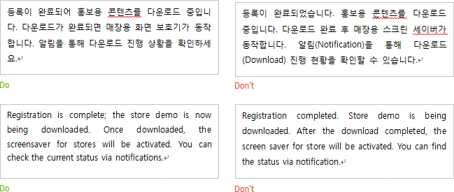
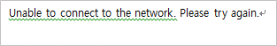
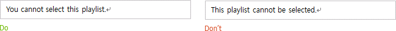
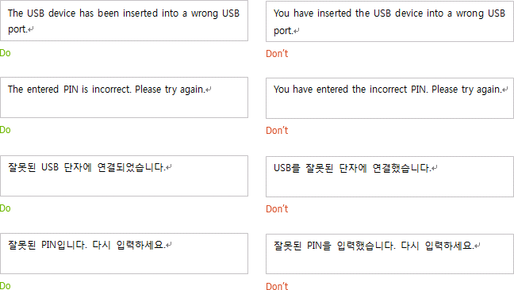

Write the main message in just two sentences; three sentences at the most.

Add an ellipsis at the end of sentences that show an action is in progress.
Avoid using “please” unless the user is inconvenienced by the product through no fault of their own.
For example, this is acceptable when the user correctly performs an action but must do it again due to a fault in the system, device, or network.

Use the Active Voice
In English, use the active voice whenever possible.

Exception)
It is okay to use the passive voice not to implicate the user as the source of the error.

Casual Verb Endings
In Korean, use the verb ending “-했습니다” for declarative sentences and “-하세요" for imperative sentences.